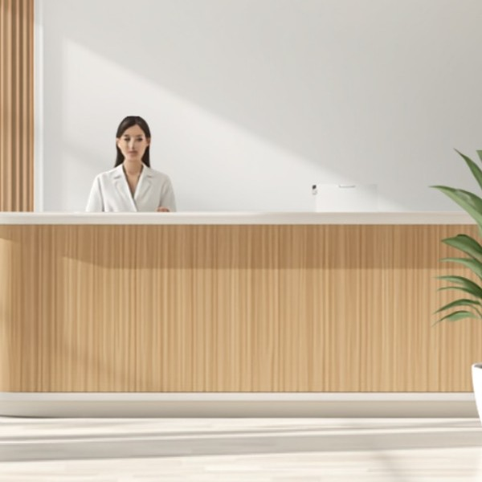
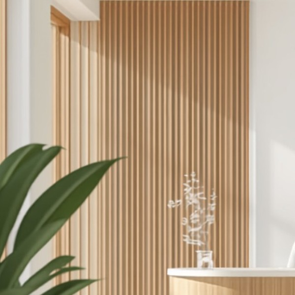
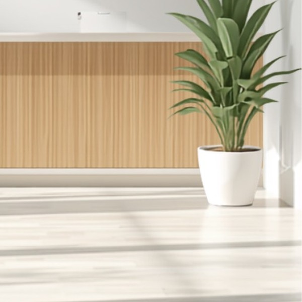

当院で、1人が卒業したとき
77件共有ファイル。うち48件は、辞めたあとでは医院に取り戻せないものでした
人に仕事が付いていると、辞めた瞬間に、医院が開けないものが出ます。いまは、スタッフ名簿を停止にするだけで、翌朝に合言葉が入れ替わります。
金額は、当院の請求書台帳とAIの領収書で確かめた数字です。くわしく見る →
仕事を覚えてもらっても、辞められると、採用も教育も振り出しに戻ります。AIを秘書や右腕にすると、その心配がありません。手順ごと、医院に残るからです。
人に仕事が付いていると、辞めた瞬間に、医院が開けないものが出ます。いまは、スタッフ名簿を停止にするだけで、翌朝に合言葉が入れ替わります。
事務スタッフ1人（週5日・1日6時間・時給1,200円で、社会保険の医院負担を含む概算）は、年に約200万円。採用と教育の手間は、別にかかります。第2領域は、初年度56万円（構築20万円＋月3万円×12）です。
AIにも、止まることはあります。画面の変更やパスワードの変更です。止まったことが、その日のうちに分かる仕組みを、あわせてお渡しします。
そのすき間から、売上と時間が静かにこぼれ落ちていきます。院長と事務長が抱えている仕事を、ひとつずつAIが引き受けます。
直前・無断キャンセルに気づくのはいつも後から。空いた枠のまま、その日の売上が消えていく。
今日の予定・注意患者・タスクの共有を、毎朝だれかが手作業でまとめている。
返信した方がいいと分かっていても、文面を考える時間がなく放置しがち。
自費・コンサルの売上突合、スタッフ歩合の計算が、毎月院長とスタッフの時間を奪う。
診療が終わってからが、もうひとつの仕事。——この時間を、まるごとなくします。
毎日の集計、月末の突合、返信の下書き——。それがなくなると、診療のあとの時間が戻ってきます。使い道を決めるのは、院長です。
「開発中」と記したもの以外は、すべて自院で毎日動いている仕組みです。医院に合わせて、必要なものだけを選べます。
キャンセルしそうな予約を毎日AIが見つけ、フォロー対象を自動で整理します。
算定の条件を満たしているのに、まだ算定していない患者を毎朝リストにします。
提出前のレセプトを自動で点検し、返戻・査定になりそうな箇所を先に知らせます。
来院した記録と算定の記録を突き合わせ、入力し忘れをその月のうちに拾います。
自費の請求額と入金額の差を患者ごとに洗い出し、回収もれを防ぎます。
問診票で自費治療に関心を示した方が来院する日の前に、担当者へそっと知らせます。
新しいクチコミに、医院のトーンに合わせた返信文をAIが下書きします。
診療の空き時間を、Googleや公式LINEへ自動で投稿。空席をそのまま集患につなげます。
翌月の休診日入りカレンダーを自動でつくり、Googleへ画像で掲載します。
今日の予定・タスク・重要メールを、毎朝スタッフのチャットへまとめて配信します。
録音から要約と「決まったこと」をAIが取り出し、共有シートへ残します。
自費売上の突合とスタッフ歩合の計算を自動化。月末の集計作業をなくします。
勤怠の集計と、振込データと給与額の照合を自動で行い、間違いだけを知らせます。
技工物の指示・受領・再製の記録を技工所と共有し、書き写しと行き違いをなくします。
求人サイトの応募者へ送る文面をAIが下書き。送信は必ず院長が確認してから。
院内の手順動画を検索できる一覧にまとめ、増えるたびに自動で更新します。
スタッフ名簿を停止にするだけで、翌朝には院内資料の合言葉が入れ替わり、共有の一覧からも自動で外れます。
スタッフの日報・週報をAIが読み取り、フィードバックの下書きを用意します。
求人サイトの応募数・採用数を毎月自動で集計し、記録シートに転記します。
仕組みを動かして見つかったことを、そのまま並べました。どれも、医院の記録（予約システム・レセコン・口コミ・台帳）で数えたものです。くわしい作り方は、記事とnoteに書いています。
当院が実際に払っていた事務代行の費用と、それがAIでどう変わるかです。数字は、請求書台帳（出金の記録）、事務代行の残り時間の通知、AI（Claude）の領収書で確かめたものです。
契約は、毎月25時間です。時間あたりに直すと、約5,940円（148,500円÷25時間）になります。
6月から、Claude Maxを使っています。6月〜10月の領収書6通の合計は$741.30（約111,195円）。10月21日の追加利用分$99も含みます。
Claudeは、この仕組み以外の作業にも使っています。それでも、月額を全額かけて引いた、きびしめの計算です。画像づくりなど、ほかのAIサービスの利用料は、含まれていません。
実際に浮くのは、12月からです。11月末までは、これまでどおり払います。AI側の費用は、前のカードのとおりです。
上の時間単価で金額にすると、月に約18,300円（年に約219,600円）です。事務代行のままなら、かかっていた分の目安です。
時間単価は、月額を契約時間で割った目安です。ドルの金額は、1ドル=150円で換算した目安です（カードの実際の請求額は未確認）。院長やスタッフが手作業に使っていた時間は、記録がなく、ここには載せていません。
請求の金額は合っていて、入金の記録だけが立っていない。人が目で追うと「入っているはず」で流れてしまう金額でした。
賞与の明細を見ていなかったことと、現金で払った人がいたこと。足し引きすると、1円まで合いました。
共有を外すことと、持ち主を移すことは別でした。本人のアカウントを止めた瞬間に、医院が開けなくなるものが48件。
返事を自動にしても、予約が決まるところまでの道がないと、患者さんは途中で止まります。止まった理由を見て、作り直しました。
外注の点検は正確です。ただ、返ってくるまでの2日、こちらは何もできません。先に見つけて直せれば、その2日が空きます。
知識がないのではなく、「見えていない」ことが原因でした。毎朝のリストより、週1回の会議で話すほうが効きました。
スタッフが怠けていたのではなく、「手渡す仕組み」が無かったことが原因でした。朝礼の前に、今日の担当を配るようにしました。
数字は悪くないのに、返信が止まっていました。感情のあるうちに書かない、という決まりを入れて、下書きを自動で作ります。
空きを一斉配信していた公式LINEは、約46%にブロックされていました。出し方を変えて、4か所へ自動で出しています。
空いた枠が埋まらなかった場合の目安です。前の晩に、キャンセルしそうな予約を見つけて、動かしています。
数字は、すべて当院の記録です（キャンセル対策の月額の試算だけ、外部の記事の目安）。個人名・患者さんの情報は載せていません。
私自身、集計や転記を事務代行に外注していました。いまはそのほとんどをAIに置き換えています。両方を実際にやった立場から、違いを正直に書きます。
ひとつだけ正直に。最初に作るまでには、数日から数週間いただきます。そのかわり、作るのは一度だけです。人が毎月動く外注と違って、二度目からは待ち時間も、依頼のやりとりもありません。
出勤する頃には、その日に必要な判断だけが手元に。院長も事務長も、あとの手作業に取られる時間がありません。
集計も、転記も、はじめは事務代行に出していました。自分でやる時間がなかったからです。
けれど、頼んでから返ってくるまでが遅い。金額は毎月積み上がる。上がってきたものが思っていたレベルに届かず、結局こちらで直す。それが何年も続きました。
そこにAIが来ました。半信半疑で自分の医院の仕事をひとつ自動化してみたら、想像していたより、ずっとうまくいきました。それから毎日ひとつずつ増やして、いまは100を超える作業が、私が何も言わなくても終わっています。外注していた仕事は、ひとつずつ消えていきました。
戻ってきたのは、
時間と、自由でした。
院長という仕事は、忙しい。忙しいだけならまだいいのですが、心をすり減らしている人が多すぎると思っています。数字を合わせるため、書類を埋めるため、締め作業のために残る。本当にやりたかったことから、どんどん遠ざかっていきます。
緊急ではないけれど、重要なこと。スタッフを育てる。仕組みを整える。自分の勉強をする。家族と過ごす。本当はそこに時間を使いたい——それを「第2領域」と呼びます。この名前は、私が取り戻したかったものそのものです。
同じ立場の方に、同じように楽をしてほしい。便利だと感じてほしい。そして、幸せでいてほしい。
それだけの理由で、これを作っています。
IT業者でも、事務代行でもありません。毎日ユニットに座り、スタッフを抱え、月末の数字を見ている人間が作っています。診療科が違っても、院長が抱えている悩みはほとんど同じです。
提案書の中の話ではありません。100を超える仕組みが自院で動き、失敗したものは捨ててきました。現場で残ったものだけをお渡しします。
専門用語で煙に巻きません。ITが苦手でも大丈夫です。何が起きて、何がなくなるのか。それだけをお伝えします。
いまも毎日、患者さんを診ています。そのかたわらでAIを研究し、自院の業務を次々と自動化してきました。人を雇う重さも、辞められる痛みも、月末に数字が合わない不安も、全部やってきた側です。だからこそ、何がしんどいのかを説明しなくても分かります。



医院の困りごとを伺います。合わないと思えば、無理な導入はしません。
費用なしお使いのシステムに合わせた設定・接続を、こちらで行います。
最初のひと月ふた月は、これまでのやり方と並べて動かします。ズレたら直す。それを何度か繰り返して、任せられる状態に持っていきます。
ここが肝心です毎日AIが動きます。調整や改善は、月額サポートで続けて対応します。
処理する件数では、料金は上がりません。患者さんが増えても、集計する量が倍になっても同じです。仕組み5本までは月30,000円。それ以上に増やしたくなったら、そのときご相談ください。
集計や転記が回らないとき、医院がとる手は2つです。人を増やすか、事務代行に出すか。どちらも人が動くぶん、毎年かかり続けます。そして人を雇えば採用と教育の手間がかかり、辞めればまた振り出しに戻ります。
求人広告も、面接も、条件交渉もありません。
引き継ぎも研修も不要。決めた翌週から同じ精度で動きます。
辞めません。担当が代わっても、手順ごと残ります。
ただし、人にしかできない仕事があります。電話に出ること、患者さんに声をかけること、迷ったときに考えること。AIが引き受けるのは、人がやる必要のない作業だけです。スタッフを減らすための道具ではなく、いまいるスタッフが本来の仕事に戻るための道具だと思ってください。
医院の規模や、お使いのシステムによって変わるため、あくまで目安です。合わないと判断したら、こちらからお断りすることもあります。無理に導入して、動かない仕組みを置いていくことはしません。
多くの場合は使えます。画面を人が操作してできることは、たいてい自動化できます。レセコン・予約システム・スプレッドシート・チャットのどれを使っていても構いません。まずお使いのシステム名を教えてください。その場で「できる／できない」をお答えします。
大丈夫です。設定も接続も、こちらで行います。医院側でしていただくのは、最初にIDとパスワードをお預かりすることと、出来上がったものを見ていただくことだけです。専門用語で説明することもしません。
なりません。仕組みはすべて医院のアカウントの中で動きます。事務代行のように名簿や一覧を社外に置くことがないので、そこが業務効率化の手段として大きく違うところです。
使えます。レセプトの点検、予約のキャンセル対策、クチコミ返信、勤怠と給与の照合、スタッフの日報チェックは、歯科医院でも医科クリニックでも同じように動きます。歯科に固有のもの（技工指示書など）は、医科では別の業務に置き換えてご提案します。
内容が決まってから、おおむね数日〜数週間です。人が毎月動く外注と違い、作るのは一度だけで、二度目からは待ち時間がありません。着手前に目安の日数をお伝えします。
やめられます。月額サポートは当月末までにお申し出いただければ翌月から停止し、違約金もありません。停止したあとも、それまでに作った仕組みと記録はすべて医院のアカウントに残ります。
むしろ、そこが中心です。集計・突合・転記・催促といった仕事は、多くの医院で事務長やベテランスタッフ一人に集まりがちです。その方が辞めたら止まる、という状態をなくすのも目的のひとつです。手順を仕組みに移してしまえば、休んでも、担当が代わっても、同じように回ります。
新しいシステムに乗り換えていただく必要がない点です。いま使っているものはそのままに、そのあいだの手作業だけをAIが引き受けます。入れ替えに伴う教育も、移行作業も発生しません。
あとから知ると腹が立つことは、契約の前に知っておいたほうがいいと思っています。
仕組みを動かすのに有料のサービスが必要な場合、その契約と利用料は医院側でお持ちいただきます。月に数百円で済むことも、数千円かかることもあります。必ず事前に金額をお伝えし、ご承諾いただいてから進めます。勝手に契約することはありません。
当月末までにお申し出いただければ、翌月から停止します。違約金も、引き止めもありません。停止後も、それまでに作った仕組みと記録はすべて医院のアカウントに残ります。
お使いのシステムの画面が変わったり、パスワードが変更されると、仕組みは止まります。止まったことがその日のうちに分かる仕組みをあわせてお渡しし、直すところまで月額サポートに含みます。「動いているつもりで止まっていた」が一番怖いので、そこは必ず作ります。
本業は歯科診療です。緊急の停止には優先して対応しますが、日中すぐに電話がつながるわけではありません。常駐のサポート窓口が必要な医院には向きません。そこは正直にお伝えします。
自動化は、作って終わりではありません。実際の患者さんのデータで動かすと、想定していなかった例外が必ず出ます。最初のひと月ふた月は、これまでのやり方と並べて動かし、ズレを見つけては直します。その手間を織り込んだうえで月額をいただいています。一発で完璧に動くという言い方はしません。
AIが出すのは下書きと候補です。算定するか、患者さんに何をお伝えするか、最終的に決めるのは医院です。事務作業だけを引き受けます。
下の欄を埋めて送るだけです。お困りごとを伺い、自動化できるか・どれだけ時間が浮くかを、正直にお伝えします。合わなければ、その場でお断りください。